在附件快照 5a15288 的新版前端上，继续选择性融合 0.1.35 的本地六角色规划团队与自适应记忆模型；保留暖纸、薄荷、淡青排版和原有业务。下方分别标明本次融合与前端阶段证据，不把旧录屏冒充新功能演示。
无需云端密钥的真实六角色协作，生成与丢弃草稿不改写当前计划。记忆模型为附件自定义的 FSRS-inspired 算法，不是官方完整 FSRS；是否供本地规划参考由默认关闭的开关控制。
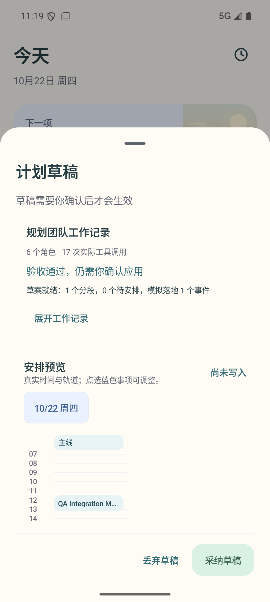
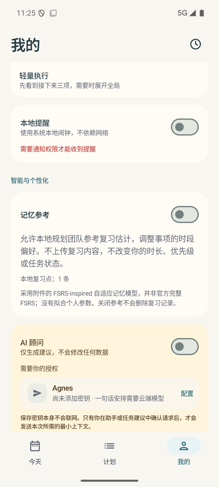
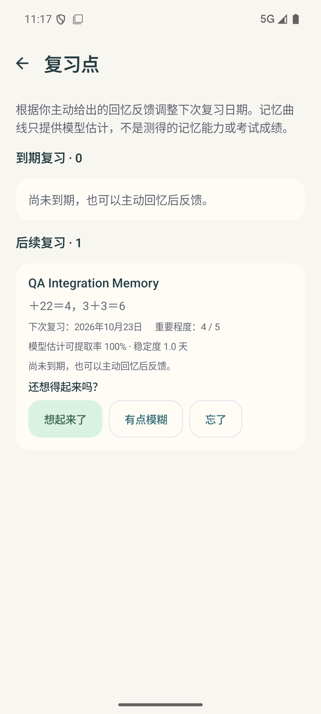
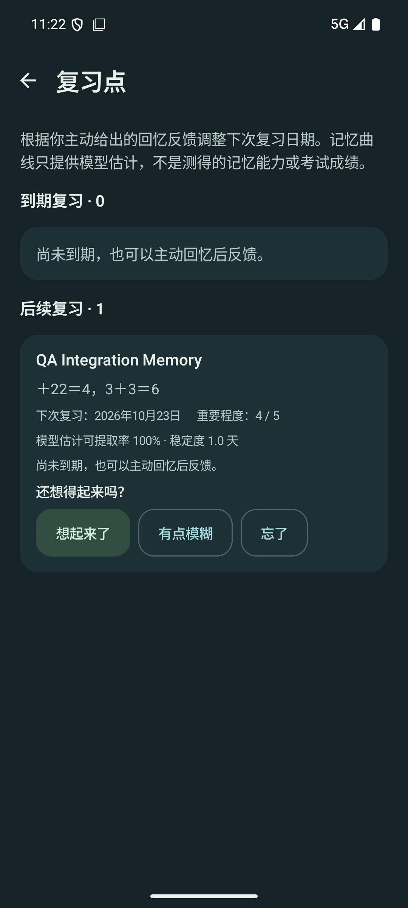
今日、计划、详情及录屏来自 437F 导航修复构建；最终 F631 只追加清库 IO 线程修复，视觉不变。我的来自同视觉的 3DBB 复测构建。图中 QA 事项是隔离演示数据，不是用户正式记录；清理通过后不留在应用中。点击图片查看原尺寸。
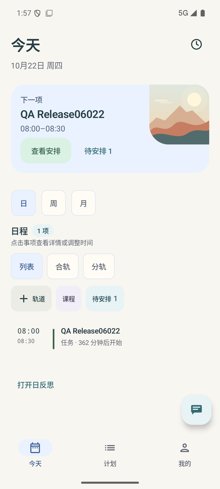
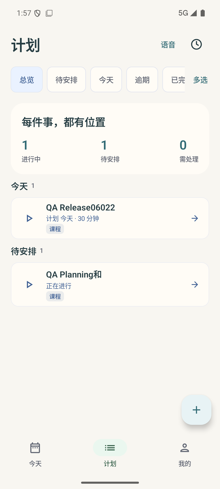
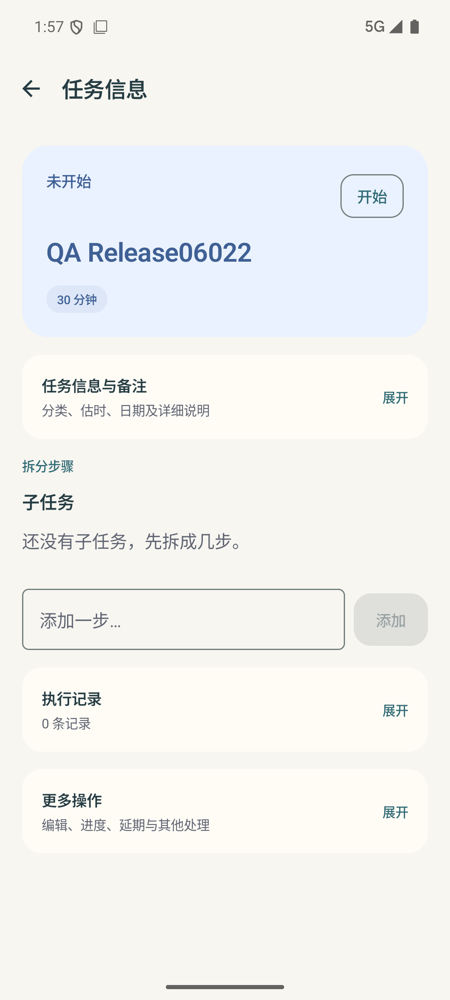
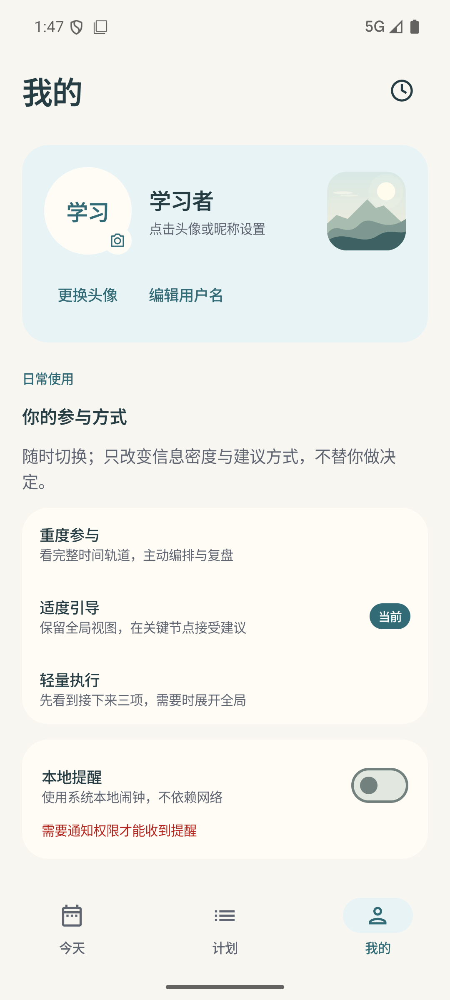
真实安排推后 15 分钟 → 回看新时间 → 计划与任务详情 → 我的 → 助手未配置失败 → 最近变更空态。原始录屏未剪辑；没有伪造云端成功。
原版使用独立空数据包，仅改调试隔离包名，原源码与资源字节未改。与上方 QA 内容不同，不将数据差异冒充视觉改进。查看溯源。
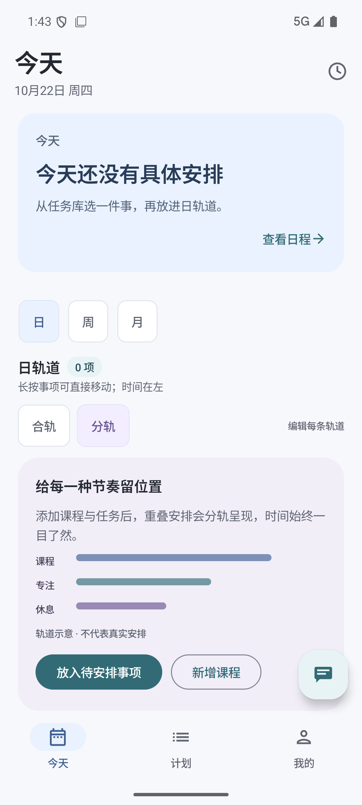
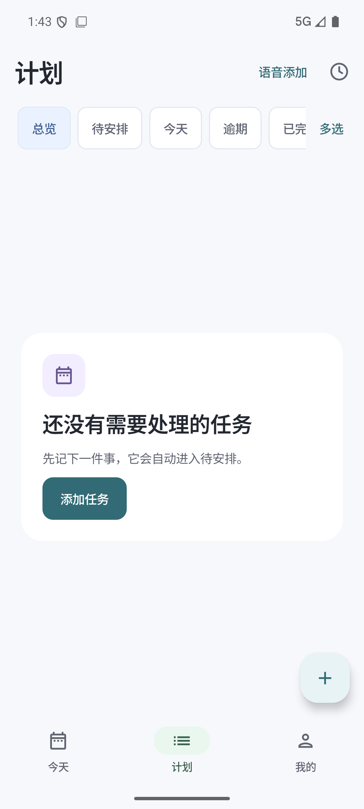
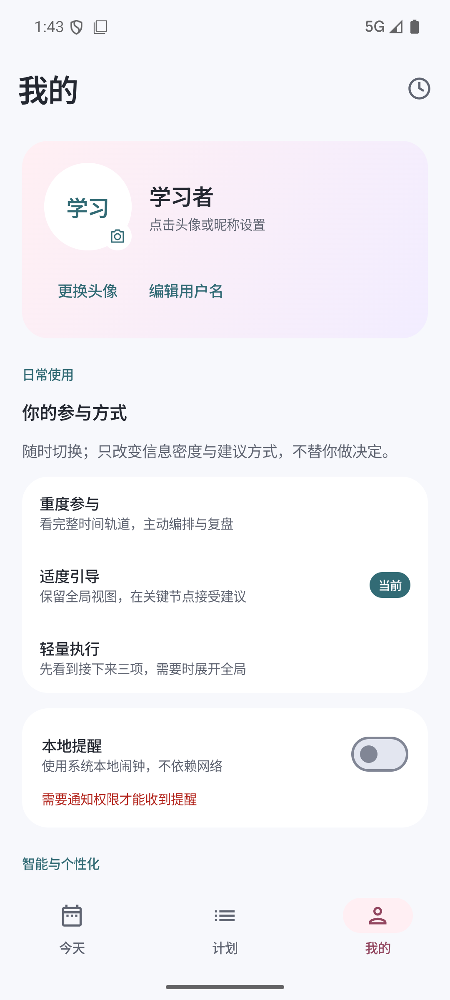